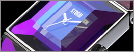
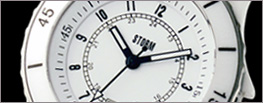

Часы
Часы STORM изготовлены из высококачественной нержавеющей стали различной обработки и полировки. Все модели часов оснащены японскими или швейцарскими механизмами, царапиноустойчивым минеральным стеклом и анти-аллергенны. Более подробно: подробная информация
 |
Мужские часыЛиния часов STORM для мужчин включают в себя модели выполненные в разных стилях с ярко выраженной индивидуальностью. Различные приспособления и другие уникальные атрибуты делают их ультра-модными аксессуарами для стильных и современных мужчин |
|  | Женские часыЖенская коллекция часов STORM создана под влиянием последних модных тенденций. При изготовлении этих часов, помимо стали, используется позолота и драгоценные камни. Также существует серия классических женских часов STORM , известных своим минимализмом и плавностью линий.и плавностью линий. |
|  | UnisexУНИСЕКС Одними из характерных черт дизайна компании STORM являются минимализм и простота. Именно такими являются часы, которые подходят как мужчинам, так и женщинам. |